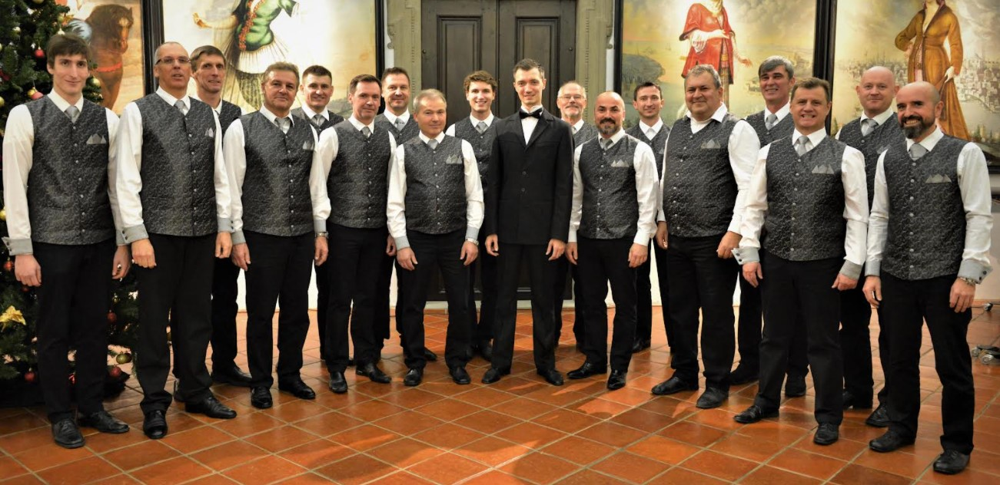
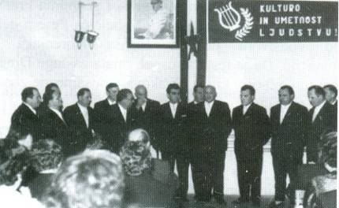

KMZ Ptuj
Komorni moški zbor Ptuj
Komorni moški zbor Ptuj
Komorni moški zbor Ptuj je bil ustanovljen leta 1953. Zbor se je vidno uveljavil pod umetniškim vodstvom Jožeta Gregorca, Branka Rajštra in od leta 1979 do 2005 Franca Lačna. Od leta 2005 ga je vodil Ernest Kokot. V oktobru 2012 je zbor prevzela mag. Nina Lorber. V letu 2016 je vodenje zbora prevzel profesor glasbe Mihael Roškar.
Zbor spada med pomembnejše slovenske moške komorne zasedbe. V zboru pojejo možje in fantje iz Ptuja in okolice. S ponosom lahko napišemo, da danes v njem prepeva že četrta generacija pevcev. Komorni moški zbor poje tradicionalni pevski program, s poudarkom na slovenski pesmi. Zbor se redno udeležuje pevskih tekmovanj, festivalov in ostalih dogodkov s področja zborovskega petja. Zbor je zato dobro poznan v Sloveniji, kot tudi drugod po Evropi.
Komorni zbor je člen v tradiciji ptujskega zborovskega petja, ki je v šestdesetih letih 19. stoletja izšlo iz slovenske Čitalnice na Ptuju. Začetek Komornega moškega zbora pa je bila manjša skupina pevcev iz društva Svoboda. Kot zbor se je uveljavil okoli leta 1953 pod vodstvom prof. Jožeta Gregorca. Leta 1963 mu je sledil Branko Rajšter. V začetku sedemdesetih let je zbor prevzel naziv Komorni moški zbor Ptuj. Od leta 1979 pa do leta 2005 je zbor enako zavzeto vodil glasbeni pedagog Franc Lačen. Programsko posega zbor od zahtevnih zborovskih skladb pa do ljudskih pesmi. Poleg slovenskih stvaritev se pojavljajo v zboru tuja zborovska dela.
V ospredje pa je treba postaviti izvajalsko dejavnost. Zbor pripravi letno navadno en koncert in je stalni udeleženec vsakoletne občinske in območne pevske revije. Na občinski ravni se zbor udeležuje javnih srečanj, ki jih prirejajo občina sama in ustanove s področja kulture, šolstva, zdravstva, pa tudi podjetja. Tako je zbor med drugim zaznamoval 1900 – letnico mesta Ptuja in slavnosti ob 750. obletnici tukajšnjega minoritskega samostana in vinarstva, v zadnjem času pa 110 let ptujskega Pokrajinskega muzeja. Z drugimi zbori je vzdrževal pogoste stike z vzajemnimi obiski in nastopi. Nadalje se je zbor pokazal po sosednjih državah in tudi drugod po Svetu. Zbor je bil pritegnjen tudi k snemanju na radiu in televiziji. Leta 1979 je izšla njegova velika plošča, nato dve glasbeni kaseti, zdaj pa že več zgoščenk. Za svojo kulturniško in posredovalno vlogo mu je bilo s strani občine podeljeno najvišje priznanje na področju kulture, velika oljenka.